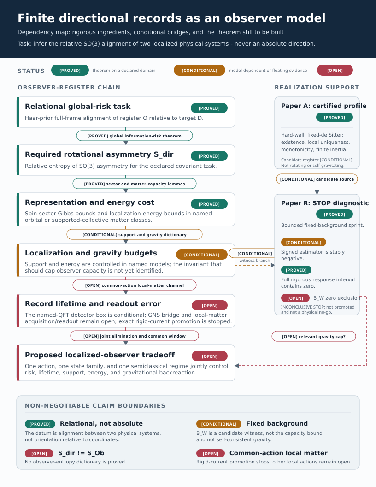

Can one localized system acquire, retain, and expose a relational orientation record while its information, support, energy cost, and gravitational footprint are controlled in one semiclassical regime?
Quantum-gravity observer rules give finite operational content to an observer, while de Sitter algebras include it in the construction [1]-[4]. We ask whether a localized register can make assumptions auditable by storing another system's relative orientation for later readout.
The aim is not to identify a rotor with an observer, but to expose the needed information, dynamics, localization, and gravity.
Finite spatial reference frames and their degradation are established [5]-[7]. We use a wholly relational task: if O is the register and D the target, the unknown is their alignment, not orientation relative to coordinates:
Performance is the Haar-prior global risk for estimating g_rel. It probes the full rotational orbit, unlike local sensitivity or Hilbert-space size alone.
For the covariant orientation ensemble, we begin with the relative entropy of rotational asymmetry:
rho_acc includes every memory or charged controller available again at readout; replacing it by rho_O is unjustified in general. S_dir measures rotational asymmetry, not memory, thermodynamic entropy, dimension, Casimir, quantum Fisher information, or Harlow's S_Ob. Their possible comparison is review question 1.
Lifetime is operational: after time T, a permitted relational readout must still attain the declared risk. This is classical-record stability, not generic phase coherence.
Fix C_dir over localized models, states, environments, actions, and acquisition/storage/readout protocols:
Equation (3) is only an architecture. The immediate gate compares costly blank-record information, after subtracting any nondisturbing classical sector, with complete-source disturbance. Generic channel, no-broadcasting, and WAY theorems are subsumption tests; heat and gravity are later lifts.
Existing results separately control global risk, confined orbital capacity, and regular-bath degradation; the Bunch-Davies channel still needs a QFT GNS bridge.
The QFT GNS bridge and common-action local-matter channel remain open. The factorized current has a nonzero commutator for spacelike-separated smearings and is not local matter. A replacement must derive acquisition, storage, readout, and stress from one action [10].
The exact fixed-de Sitter Weyl estimator is negative, but its rigorous interval contains zero because the primal certificate is about ten times too broad [11]. Paper R therefore stops at viability: suggestive, neither a response theorem nor a capacity bound.
A supported massive Skyrmion supplies one certified matter candidate [12]. It only makes the supported-profile subproblem nonempty; the architecture must survive rejection of this realization.
The two STOPs expose the fork. We ask whether directional records are useful, whether S_dir can be compared with S_Ob, what gravitational quantity constrains the register, and whether a one-action model helps. We seek redirection, not endorsement or a publication decision.
S_dir != S_Ob; record stability is not quantum coherence; measurement back-action is not gravitational backreaction; fixed-background response is not self-consistent gravity.
The response sprint did not certify zero exclusion. These questions decide whether a different bridge is worth building.
S_dir, used here as an operational SO(3)-asymmetry resource for a covariant alignment task, meaningfully comparable to the observer entropy S_Ob in the observer rule, or are these fundamentally different resources?[PROVED] Let the unknown relative orientation g in SO(3) have normalized Haar prior, let an arbitrary POVM return g_hat, and use full-frame chordal cost sin^2(theta(g_hat^-1 g)/2). The reference representation may contain arbitrary rotation-trivial multiplicities. For every normal state and POVM, including mixed states and invariant ancillas,
The first bound follows from the spin-1 fusion matrix and a discrete Hardy inequality. The second follows from relative-entropy data processing for the covariant orbit ensemble and a global rate-distortion bound. Neither proof assumes a locally unbiased estimator, Cramer-Rao regime, purity, polarization, fixed irrep, or finite-dimensional multiplicity. This is Research Theorem W3 in THEOREMS.md and docs/global_so3_reference_risk.md.
[PROVED] The datum is the alignment of two physical frames, never orientation relative to coordinates. The loss is global over the group, not a local-sensitivity proxy. For strict integer-spin support through j=J, R_ref>=sin^2[pi/(2J+3)]. The fermionic Finkelstein-Rubinstein sector has its separately stated projective bound.
[PROVED] Here S_dir is only relative entropy of rotational asymmetry. Equation (A.1) gives the necessary allocation S_dir>=(3/2)log(c_SO3/R_ref) where positive. It does not establish accessible classical memory, sufficiency, or a relation to S_Ob.
[CONDITIONAL] If the complete accessible ensemble is the covariant orbit sigma_g=U(g)sigma U(g)^* and stipulated isotropic heat convolution acts through the same U, with no G-dependent unheated side system, the spin-1 score is attenuated exactly at exposure Gamma(T)=integral_0^T gamma(t)dt:
[PROVED] The regular-Gaussian-bath finite-switch theorem defines common-input exact and comparison maps and survives a finite inert ancilla. [CONDITIONAL] Given the open KMS GNS/Araki-Woods channel bridge, AS2 applies it to one ten-dimensional Bunch-Davies detector, pays the full operator-to-diamond factor 50, and gives normalized diamond error below 0.039 on an open nonzero-coupling box; U7 then gives R_physical>=0.532753...>1/2. [OPEN] Its exact factorized density fails microcausality under disjoint spacelike smearings and cannot be promoted unchanged to local matter; preparation, readout, stress, and backreaction are not controlled by the same action. Paper U U8a therefore remains open.
[PROVED] For finitely many spinless nonrelativistic particles of total mass M, hard support |x_i|<=a, and a nonnegative orbital Hamiltonian with fixed energy zero satisfying H_ex>=sum_i p_i^2/(2m_i), every form-domain state obeys
The result includes mixed, zero-mean, and rare-tail states with rotation-trivial internal labels. A ground-subtracted H_gs requires a proved form offset H_gs+Delta>=T, with Delta included in E_ex. The theorem excludes intrinsic spin, relativistic or massless fields, soft localization, negative interaction energy, and nontrivially rotating light species. A separate compactness substitution is a declared proxy, not a general-relativistic body theorem. See W3a and docs/localized_orbital_reference.md.
[PROVED] More generally, sector floors epsilon_j yield S_dir<=beta E+log Z_H(beta) only when Z_H(beta)=sum_j(2j+1)^2 exp(-beta epsilon_j) is finite. Covariance plus finite mean energy is insufficient; a bounded invariant counterexample permits increasingly accurate frame states at uniformly bounded energy. A physical theorem must derive growing sector floors from its matter model.
[PROVED] In the hard-supported massive-Skyrme hedgehog collective family on fixed de Sitter, with support radius a and minimum support lapse N_w>0, the static energy and collective inertia obey
This produces a linear large-spin floor and finite integer or projective rotational partition function. It is uniform over radial relaxation inside the adiabatic collective family (W3b).
[CONDITIONAL] The Skyrmion is therefore a concrete candidate for the capacity premise, not a complete rotating-field observer. Collective-band completeness, noncollective modes, projection error, right/isospin access, and the capacity of a marked rotating wall remain uncontrolled.
[PROVED] At the declared fixed-background hard-wall parameters, AU.1 is an exact-rational computer-assisted local existence theorem. It proves one solution in a certified Newton ball, strict monotonicity, a negative wall slope, and finite positive rotor inertia. The source artifact is experiments/skyrmion_newton_reduced_hessian_rounded_exact_certificate.json, SHA256 prefix c4c95db47470.
Digest strings on pages 5-7 show the first 12 hexadecimal characters. Full SHA256 values and exact artifact paths are indexed in claim_evidence_ledger.md.
[PROVED] This is local uniqueness on fixed pure de Sitter with a prescribed Dirichlet wall. It is not global uniqueness, dynamical stability, a rotating solution, arbitrary wall dynamics, or Einstein-Skyrme backreaction. [CONDITIONAL] It establishes that the candidate used in later calculations is more than a shooting profile; the wall remains a physical modeling input, not a harmless regulator.
[PROVED] A static quadrupolar source cannot be specified by energy density alone. W3n gives the exact static even-parity bulk conservation equations and wall tractions. W3o shows that the undeformed rigid rotational Skyrmion stress fails this gate. This rejects the rigid source, not rotating Skyrmions: the centrifugal matter deformation and moving support must be included.
[PROVED] For the declared fixed-background matter-plus-moving-membrane weak form, W3z.15-W3z.16 establish a closed positive Friedrichs operator with ||A^-1||<=100, nonzero regular forcing, and a unique nonzero weak centrifugal deformation. The source artifacts have SHA256 prefixes 4a4e3ecd48a2 and 9edc2bc47953. Nonzero matter deformation alone does not imply nonzero exterior response.
[CONDITIONAL] Exact Hilbert-variation and shell identities, with source-bound mesh refinement, support a completed bulk-plus-moving-membrane stress at the default point. The analytic factorization is exact; closure of the selected branch is floating rather than interval certified. The safe wording is "source-bound floating conservation audit," not an unqualified certified source.
[PROVED] Once a valid conserved stress is supplied, the source, propagation, and readout maps are exact in one frozen convention. On fixed pure de Sitter, for the static ell=2 normalization, regular center behavior, and no-log horizon condition,
The Friedrichs operator has a positive exact Green kernel and A_2>=6/R^2. W3t, W3v, and W3x prove the stress-to-master identity, ideal-shell transmission, and exterior master-to-electric-Weyl reconstruction. Their artifact prefixes are 3be17612134b, c83536779d2a, and 3025d65fe825. Exact maps do not certify a nonzero completed input amplitude.
[CONDITIONAL] The completed signed estimator is stably negative, J_hat in [-0.0030795543,-0.0025529313], after including origin, correlated positive-radius, and compatible weak-wall terms. This is encouraging design evidence, not the response theorem: the rigorous residual-product interval on page 7 contains zero.
B_W would witness non-invisibility on a fixed background. It is not the observer-capacity bound, a self-consistent geometry, or a substitute for collapse, horizon/QES displacement, or full junction data.[PROVED] The certification architecture is exact. Outside the compact source, the fixed-background response factorizes into one amplitude A_ext=J_rigid+B(y). If the symmetric weak form obeys q(y,v)=ell(v) and the adjoint obeys q(v,z)=B(v), arbitrary conforming trials satisfy
Zero exclusion requires the distance of the corrected-estimator interval from zero to exceed the product of the full primal and adjoint dual-residual bounds. This is W3z.17.
[PROVED] The bounded sprint completed every origin, bulk, and wall term. The all-strong primal and weak completed-square adjoint certificates give
The full interval contains zero. Under the predeclared bounded-sprint rule, the result is INCONCLUSIVE STOP: no nonzero exterior-Weyl theorem or equal-energy state-discrimination corollary is certified. The decision artifact prefix is bcbb4a1af96b.
[PROVED] Holding the estimator and adjoint bound fixed, zero exclusion would require delta_y<0.082638613888227453, about a 9.50x reduction from the present primal norm. The dominant primal cell is [1/2,11/16]; the global coercivity floor is not the main loss.
[OPEN] Paper R is frozen as a viability memo and not promoted as a manuscript. A future attempt needs a materially different proof object, such as a better conforming primal trial, a certified Riesz solve, or a structural decomposition. More general subdivision of the present representation is deferred.
[PROVED] The defensible mathematical core is: global relational SO(3) risk requires asymmetry and rotational resources; named localized matter classes convert rotational capacity into energy/support cost; one hard-wall profile and its fixed-background centrifugal inverse exist; and a valid conserved quadrupolar source has exact master, transmission, and Weyl maps.
[CONDITIONAL] The defensible physical construction is narrower: a hard-supported Skyrmion is a plausible semiclassical realization, the regular-bath lemma supplies a conditional Bunch-Davies detector box but not a proved QFT channel or local matter, and the signed fixed-background estimator favors a nonzero exterior response. The completed rigorous interval does not certify that response.
[OPEN] The project has not identified S_dir with S_Ob; derived local-matter acquisition-through-readout from one action; proved a common parameter window; certified |B_W|>0; completed tensorial Israel matching; solved a rotating self-gravitating Einstein-Skyrme-de Sitter geometry; or shown that exterior Weyl response caps observer information. A closed-universe path integral is outside the present claims.
[OPEN] Novelty, priority, venue fit, and publishability are not mathematical outputs of the repository. The separate literature matrix gives the primary-source comparison. Search absence is not used as proof of priority.
| Status | Result | Primary repository pointer |
|---|---|---|
| [PROVED] | Global risk/asymmetry/Casimir bounds | THEOREMS.md W3; docs/global_so3_reference_risk.md; focused tests |
| [PROVED] | Confined orbital capacity | W3a; docs/localized_orbital_reference.md; focused tests |
| [CONDITIONAL] | Named-QFT rigid-detector finite-switch channel | AS/AS2; regular-bath lemma proved, KMS GNS bridge open; factor 50 and strict error guard |
| [PROVED] | Supported collective sector floor | W3b; docs/supported_skyrmion_collective_spectral_floor.md |
| [PROVED] | Validated hard-wall profile | AU.1; exact Newton certificate listed on page 5 |
| [PROVED] | Fixed-background source/master/Weyl maps | W3t, W3v, W3x; artifact hashes on page 6 |
| [PROVED] | Paper R viability decision | docs/paper_r_viability_decision.md; decision hash on page 7 |
| [CONDITIONAL] | Signed nonzero response evidence | Corrected estimator on page 6; the full interval contains zero |
| [OPEN] | Nonzero Weyl theorem | Needs a new primal proof object with about a 9.50-fold norm improvement |
[PROVED] The complete wording guardrail, exact artifact index, and focused verification record are in docs/harlow_review_packet/claim_evidence_ledger.md. The full source comparison and its unresolved search limits are in literature_matrix.md and source_verification_log.md.
S_dir versus S_Ob; measurement back-action versus gravitational backreaction; and fixed-background response versus self-consistent gravity are audited separately.These twelve primary sources anchor the review question. The separate literature matrix audits 43 sources across observer rules, finite reference frames, information-disturbance and resource-cost limits, clocks, de Sitter dynamics, gravity, Skyrmions, and rigorous numerics.